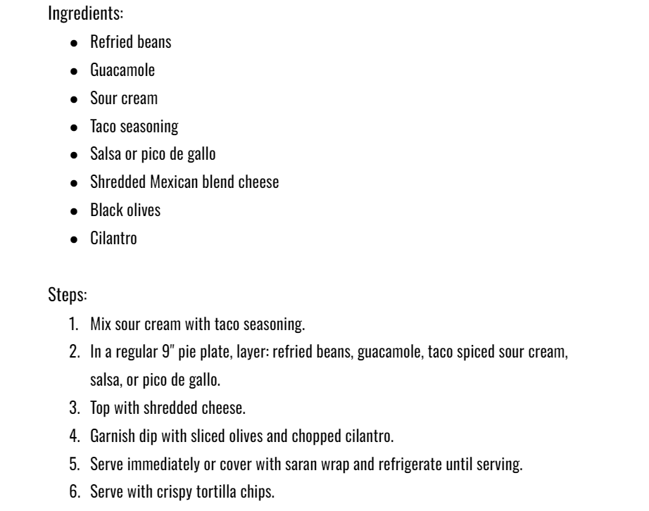

I wanted to share this recipe because my aunt always makes this bean dip during the holidays and
it's always a great snack to share with the family. When she would make it, we would all sit around the table,
eat it, and just talk. I loved this because I could connect with my family through food. It's amazing how
food can bring everyone together.
- Alyssa Serre
